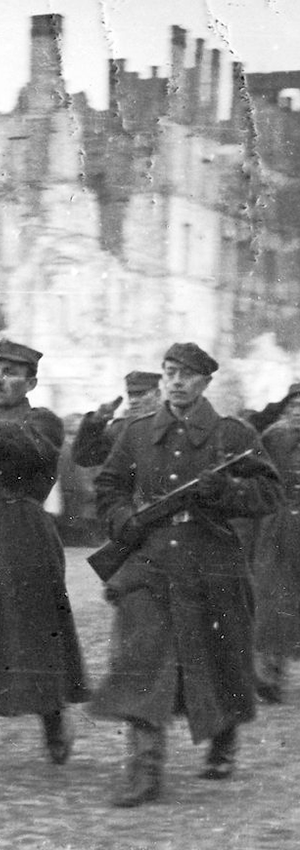
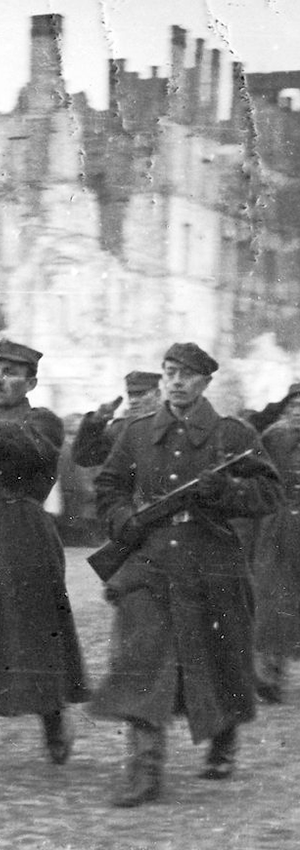

Niegdyś kwitnąca metropolia została mocno zniszczona już w czasie nalotów we wrześniu 1939 roku, wówczas mocno ucierpiał Zamek Królewski, później swoje dołożyły naloty sowieckie, po powstaniu w getcie zrównano z ziemią całą dawną Dzielnicę Północną. Największy cios przyszedł w czasie powstania warszawskiego oraz w okresie pomiędzy powstaniem a wyzwoleniem, gdy Niemcy z rozmysłem wyburzali zachowane jeszcze budynki, perły warszawskiej architektury (np. pałac Brühla czy pałac Saski).
Zniszczenie budynków to jedno, znaczenie większą tragedią były cierpienia ludności. W roku 1939 roku ludność Warszawy wynosiła 1,3 mln, w tym ok. 300 tys. ludności żydowskiej. Szacuje się, że w trakcie wyzwolenia na lewym brzegu Wisły przebywało nie więcej niż 1000 osób… Niemal wszyscy Żydzi zginęli w obozach zagłady, polscy mieszkańcy Warszawy bądź zginęli w czasie powstania, bądź zostali wywiezieni po jego upadku. Ci którzy zostali, często ostatni ocaleni Żydzi, nie mieli się gdzie podziać, pozostanie w ruinach było dla nich jedyną formą przetrwania.
#/media/Plik:Polish_Army_Parade_waf-2012-1502-29_(1945).jpg) 

14 stycznia 1945 wojska 1 Frontu Białoruskiego rozpoczęły operację warszawską, stanowiącą część operacji wiślańsko-odrzańskiej. 61 Armia nacierała z przyczółka warecko-magnuszewskiego, 47 Armia 15 stycznia z rejonu Jabłonny na Leszno, a 2 Armia Pancerna z rejonu Warki na Grójec. 1 Armia Wojska Polskiego do 17 stycznia była w drugim rzucie.
Do 16 stycznia 1945 1 Armia Wojska Polskiego zajmowała pozycje obronne od Jabłonny do Karczewa. Zgrupowanie uderzeniowe 1 Armii WP w sile:
- 1 Dywizja Piechoty,
- 3 Dywizja Piechoty i 4 Dywizja Piechoty,
- 1 Brygada Pancerna im. Bohaterów Westerplatte,
- 1 Samodzielna Brygada Kawalerii,
- 4 Pułk Czołgów Ciężkich,
- 13 Pułk Artylerii Pancernej,
- 1 Warszawska Brygada Saperów,
- 3 Brygada Pontonowo-Mostowa, przy wsparciu 1 Brygady Artylerii Armat, 5 Brygady Artylerii Ciężkiej,
- 2 Brygady Artylerii Haubic,
- 4 Brygady Artylerii Pancernej,
- 1 Pułku Moździerzy miało wykonywać uderzenie od południa z rejonu Góry Kalwarii.
17 stycznia 1945
Boże, to już jest wojsko?! Dziecko kochane, ale czy wy już naprawdę jesteście?Autor nieznany